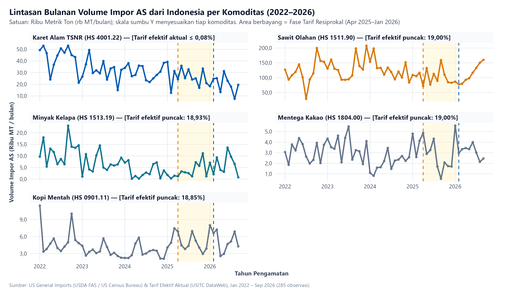
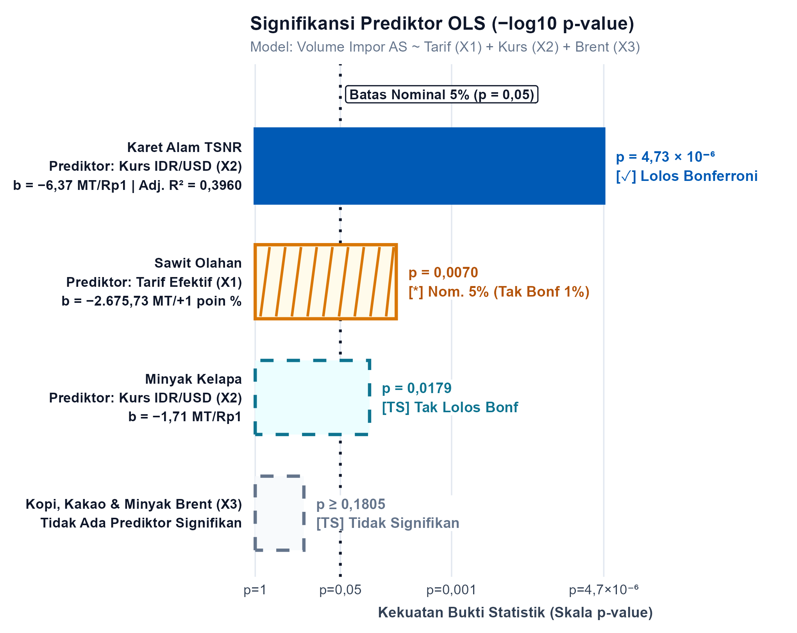

Infografis Riset Kuantitatif • Analisis Statistika (STA2511)
Satu Perubahan Kebijakan,
Lima Respons Perdagangan yang Berbeda
Analisis Kebijakan Tarif Resiprokal AS, Kurs IDR/USD, dan Harga Minyak Dunia terhadap Volume Impor Agrikultur AS dari Indonesia (Level HS-6, Januari 2022 – September 2026).
Sinopsis & Latar Belakang
Penerapan tarif resiprokal AS pada April 2025 berlangsung bersamaan dengan fluktuasi nilai tukar IDR/USD dan harga minyak dunia Brent. Penelitian menguji apakah lima komoditas agrikultur strategis Indonesia menunjukkan perubahan volume impor AS yang sama atau berbeda.Tujuan Penelitian
(1) Mengevaluasi perubahan rata-rata volume impor AS dari Indonesia sebelum vs sesudah kebijakan serta lintas tiga fase kebijakan; (2) Memisahkan keterkaitan tarif efektif aktual, kurs IDR/USD, dan harga Brent menggunakan korelasi serta regresi linear dengan koreksi Bonferroni.
285 Observasi (57 Bulan × 5 HS-6)
Sawit Olahan (1511.90)
Karet Alam TSNR (4001.22)
Kopi Mentah (0901.11)
Minyak Kelapa (1513.19)
Mentega Kakao (1804.00)
Pindai QR: Kode R, Data & Laporan Lengkap GitHub
Sumber Data Resmi dan Spesifikasi Data yang Digunakan (Januari 2022 – September 2026)
Volume Impor AS (Respons Y)
US General Imports (MT/bln) dari USDA FAS GATS / US Census Bureau — diukur sebagai impor AS dari Indonesia.
Tarif Efektif Aktual (X₁)
Rasio bea masuk aktual / nilai impor (Calculated Duty / Customs Value) dari USITC DataWeb, bukan tarif resmi pengumuman.
Kurs Nilai Tukar (X₂)
Nilai tukar bulanan Rupiah terhadap Dolar AS (IDR/USD) dari Bank Indonesia / FRED.
Harga Minyak Dunia (X₃)
Harga rata-rata bulanan minyak mentah Brent (USD/bbl) dari World Bank / FRED.
Fase 1 — Pra-Tarif: Jan 2022 – Mar 2025 (39 bulan)
Fase 2 — Tarif Resiprokal: Apr 2025 – Jan 2026 (10 bln)
Fase 3 — Pasca-ART: Feb – Sep 2026 (8 bln)
Statistika Deskriptif
Plot Deret Waktu 57 Bulan • Area Berbayang = Fase 2 Tarif Resiprokal
Tren Bulanan Impor AS & Beban Tarif Efektif Lima Komoditas (2022–2026)

Heterogenitas Skala Volume: Sawit Olahan mendominasi (>100 rb MT/bln), Karet Alam berada di kisaran 10–50 rb MT/bln, sedangkan Kopi & Kakao ribuan MT/bln.
Disparitas Tarif Efektif Puncak: Sawit (19,00%), Kakao (19,00%), Kelapa (18,93%), dan Kopi (18,85%) mengalami lonjakan tarif ~19%, sementara Karet Alam hanya ≤ 0,08%.
Sinyal Tren Awal pada Karet: Meski beban tarif efektifnya hampir nol, Karet Alam TSNR memperlihatkan lintasan penurunan paling persisten hingga Sep 2026.
Komparasi Periode & Tiga Fase
Pra-Kebijakan (39 bln) vs Sesudah (18 bln) • Kendali Kesalahan Bonferroni
Perubahan Sebelum vs Sesudah Kebijakan Tarif dan Rata-Rata Lintas Tiga Fase
1. Sebelum vs Sesudah Tarif — Bar Chart & Hasil Uji-t Welch (Independen)

| Komoditas (HS-6) | Perubahan | p-value Welch | Interpretasi Bonferroni |
|---|---|---|---|
| Karet Alam TSNR (4001.22) | −32,5% (−11.245,3 MT/bln) | 0,0000207 | [✓] Lolos Bonferroni |
| Sawit Olahan (1511.90) | −15,5% | 0,0359 | [*] Nominal 5%, Tak Bonf |
| Minyak Kelapa (1513.19) | −25,7% | 0,1640 | [TS] Tidak Signifikan |
| Kopi Mentah (0901.11) | +21,8% | 0,0814 | [TS] Tidak Signifikan |
| Mentega Kakao (1804.00) | +0,3% | 0,9812 | [TS] Tidak Signifikan |
Catatan Metode: Membandingkan 39 bulan pra-tarif vs 18 bulan sesudah memakai Uji-t Welch independen (ragam & jumlah bulan tak sama), bukan uji-t berpasangan.
2. Plot Rata-Rata Tiap Fase (3 Fase) — Sorotan Karet Alam TSNR

Triangulasi Konsistensi Tiga Fase (ANOVA, Welch ANOVA & Kruskal-Wallis):
• Karet Alam TSNR adalah satu-satunya komoditas yang konsisten signifikan pada ketiga uji setelah koreksi Bonferroni: rata-rata turun berlanjut dari 34.600 (Fase 1) → 25.700 (Fase 2) → 20.300 MT/bln (Fase 3).
• Uji lanjut Fase 3 vs Fase 1 turun −14.235,4 MT/bulan (Tukey p = 0,000756; Wilcoxon koreksi Bonferroni p = 0,0029). Empat komoditas lainnya tidak lolos ambang Bonferroni lintas tiga fase.
• Karet Alam TSNR adalah satu-satunya komoditas yang konsisten signifikan pada ketiga uji setelah koreksi Bonferroni: rata-rata turun berlanjut dari 34.600 (Fase 1) → 25.700 (Fase 2) → 20.300 MT/bln (Fase 3).
• Uji lanjut Fase 3 vs Fase 1 turun −14.235,4 MT/bulan (Tukey p = 0,000756; Wilcoxon koreksi Bonferroni p = 0,0029). Empat komoditas lainnya tidak lolos ambang Bonferroni lintas tiga fase.
Analisis Faktor Ekonomi & Uji Lanjutan
Volume ~ Tarif Efektif (X₁) + Kurs IDR/USD (X₂) + Harga Brent (X₃)
Matriks 5 Komoditas × 3 Prediktor, Faktor Berpengaruh & Grafik Regresi Linear (OLS)
Tabel 5 Komoditas × 3 Prediktor (OLS Level)
| Komoditas (HS-6) |
X₁: Tarif Efektif (+1 poin %) |
X₂: Kurs IDR/USD (+Rp1/USD) |
X₃: Brent (USD/bbl) |
|---|---|---|---|
| Karet Alam Adj R²=0,3960 |
p = 0,1676 TS |
b = −6,37 MT/Rp1 p = 4,73×10⁻⁶ [✓] Lolos Bonf |
b = +104,73 p = 0,1890 TS |
| Sawit Olahan 1511.90 |
b = −2.675,73 MT p = 0,0070 [*] Nom 5% |
b = +6,02 p = 0,2855 TS |
b = −110,14 p = 0,7304 TS |
| Minyak Kelapa 1513.19 |
b = +101,99 p = 0,5729 TS |
b = −1,71 MT/Rp1 p = 0,0179 Tak Lolos Bonf |
b = +57,27 p = 0,2367 TS |
| Kopi Mentah 0901.11 |
b = +9,41 p = 0,8990 TS |
b = +0,16 p = 0,5732 TS |
b = −3,27 p = 0,8663 TS |
| Mentega Kakao 1804.00 |
b = −60,36 p = 0,1805 TS |
b = −0,03 p = 0,8781 TS |
b = +0,99 p = 0,9300 TS |
[✓] Lolos koreksi Bonferroni; [*] Signifikan nominal 5% namun tak lolos ambang Bonferroni 1%; [TS] Tidak signifikan.
Faktor Berpengaruh & Uji Lanjutan
Karet Alam TSNR ↔ Kurs IDR/USD (X₂)
• Regresi: b = −6,37 MT/Rp1 (≈ −637,2 MT per Rp100/USD), p = 4,73 × 10⁻⁶ [lolos Bonferroni]; Adj. R² = 0,3960.
• Korelasi Pearson: r = −0,629 (p = 1,61 × 10⁻⁷).
• Pasca-ANOVA F3 vs F1: −14.235,4 MT/bln (Tukey p = 0,000756; Wilcoxon Bonf p = 0,0029).
• Korelasi Pearson: r = −0,629 (p = 1,61 × 10⁻⁷).
• Pasca-ANOVA F3 vs F1: −14.235,4 MT/bln (Tukey p = 0,000756; Wilcoxon Bonf p = 0,0029).
Sawit Olahan ↔ Tarif Efektif (X₁)
• Regresi: b = −2.675,73 MT/+1 poin %, p = 0,0070 — signifikan nominal 5%, tetapi tidak lolos Bonferroni 1%.
• Korelasi Pearson: r = −0,338 (p = 0,0102).
• Korelasi Pearson: r = −0,338 (p = 0,0102).
Kelapa (X₂), Kopi, Kakao & Brent (X₃)
• Kelapa ↔ Kurs: Pearson r = −0,339 (p = 0,0099); OLS b = −1,71 (p = 0,0179, tak lolos Bonferroni).
• Kopi, Kakao & Harga Brent (X₃): Tidak ditemukan prediktor signifikan di model.
• Kopi, Kakao & Harga Brent (X₃): Tidak ditemukan prediktor signifikan di model.
Grafik Regresi & Kekuatan Prediktor
